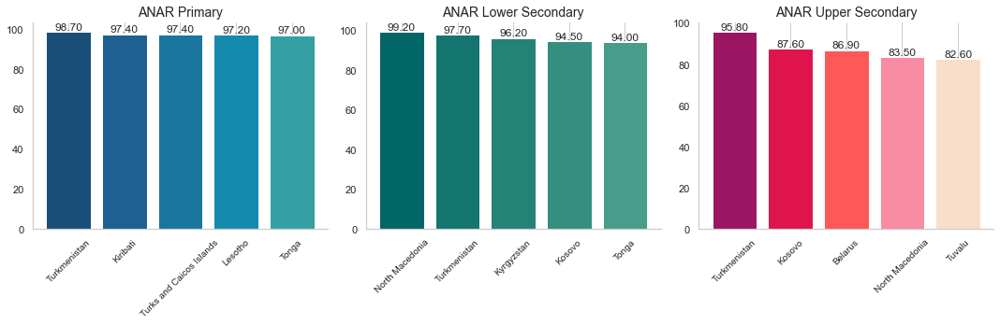
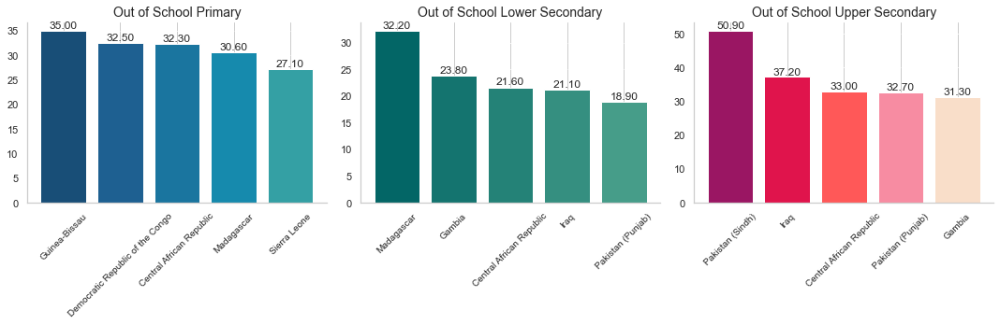
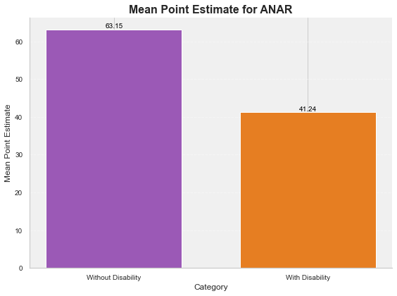
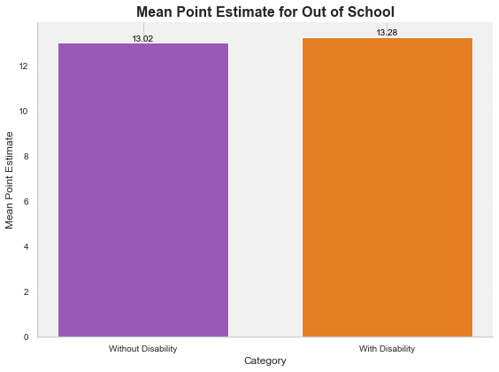
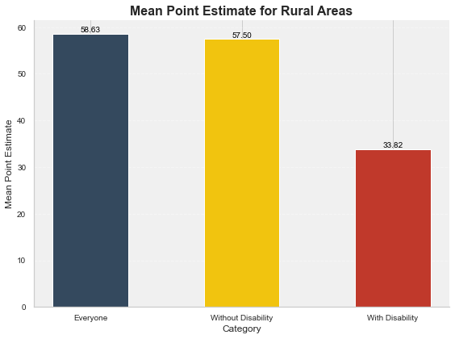
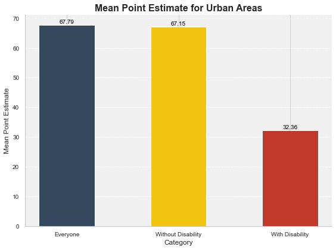
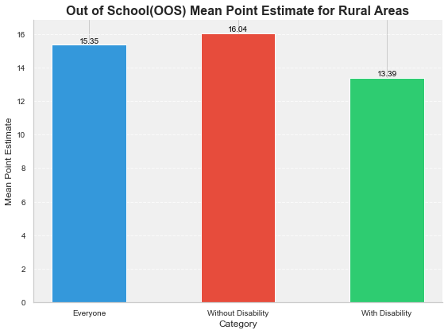

Introduction
This database serves as a vital repository of educational insights, encompassing four key indicators crucial for understanding and addressing the nuanced challenges faced by children globally. The Adjusted Net Attendance Rate (ANAR) gauges the percentage of children attending an education level appropriate for their age or higher. The Out-of-School Children Rate (OOSR) highlights the percentage of those within the official age range for a given education level not enrolled. Additionally, the Completion Rate provides insight into the percentage of children or young people completing each level of education, and the Foundational Learning Skills indicator assesses proficiency in reading and numeracy among 7 to 14-year-olds. This resource not only offers a comprehensive overview but also facilitates a nuanced examination of each indicator, contributing to informed decision-making and targeted interventions in global education initiatives.
Statistical Analysis Questions
-
Which country exhibits the highest percentage of children attending an education level compatible with their age or higher?
In the context of developing nations, Turkmenistan emerges as a standout performer, boasting the highest percentage of individuals who have successfully completed Primary and Upper Secondary levels appropriate for their age or higher. This accomplishment underscores Turkmenistan's commitment to education and highlights significant progress in academic attainment.
Furthermore, Macedonia takes the lead in educational achievements, with the highest percentage of people successfully completing Lower Secondary levels appropriate for their age or higher. This achievement reflects North Macedonia's dedication to providing a robust educational foundation for its populace.
-
Which country demonstrates the highest percentage of children or young people within the official age range for a given education level who are not attending pre-primary, primary, secondary, or higher levels of education?
In the landscape of developing nations, noteworthy trends emerge in educational accessibility. Guinea-Bissau claims the unfortunate distinction of having the highest percentage of individuals out of school at the Primary level. This emphasizes the pressing need for targeted interventions and support to ensure universal access to primary education in Guinea-Bissau.
Similarly, Madagascar faces a significant challenge, as it reports the highest percentage of individuals out of school at the Upper Secondary level. Addressing this issue is crucial for Madagascar's educational landscape, requiring strategic measures to enhance enrollment and retention rates at the upper secondary level.
In the category of Lower Secondary education, Pakistan stands out with the highest percentage of people out of school. This finding underscores the importance of focused initiatives to address barriers to education at the lower secondary level in Pakistan, ensuring that all individuals have the opportunity to access and complete their secondary education. These observations highlight the diverse challenges that developing nations face in achieving universal education and call for targeted efforts to address specific gaps at different educational stages.
-
Is there a statistically significant correlation between the percentage of children attending an appropriate education level and the severity of functional difficulties within the group of children with disabilities?
 In examining the educational landscape across diverse countries, the data reveals intriguing patterns in school completion levels appropriate for age or higher. Remarkably, individuals without disabilities exhibit a commendable 63.15% completion rate, reflecting widespread success in achieving educational milestones. Conversely, individuals with disabilities, while slightly lower at 41.24%, still demonstrate significant strides in educational attainment.
This contrast underscores the imperative to address inclusivity and accessibility in global education initiatives, ensuring that all individuals, irrespective of disability, enjoy equal opportunities for educational success. The findings illuminate the need for targeted policies and interventions to bridge gaps and foster an inclusive educational environment that caters to the diverse needs of learners worldwide.
-
Is there a statistically significant correlation between the percentage of children out-of-school and the severity of functional difficulties within the group of children with disabilities?
 In examining the prevalence of individuals out of school across the included countries, the data presents a noteworthy comparison between those without and with disabilities. Individuals without disabilities show a 13.02% out-of-school rate, signaling challenges in ensuring universal access to education. Strikingly similar, individuals with disabilities experience a slightly higher rate at 13.28%, emphasizing the shared hurdles faced by both groups in maintaining educational engagement.
These statistics underscore the collective need for targeted interventions and inclusive policies to address the complex factors contributing to school disengagement across diverse populations. By recognizing and addressing these challenges, global education initiatives can strive towards ensuring equitable access to education for all individuals, fostering a more inclusive and accessible learning environment.
-
Is there a statistically significant difference in the percentage of children attending an education level compatible with their age or higher between rural and urban areas?
 
The disparity between rural and urban areas is evident in the statistically significant difference in educational attendance percentages. Urban areas, with a higher overall attendance rate, suggest a potential correlation between geographic location and educational opportunities. The nuanced breakdown for individuals with and without disabilities further emphasizes the need for targeted interventions to address accessibility challenges in both rural and urban settings. These findings underscore the importance of tailoring education policies to address specific regional needs, fostering inclusivity, and ensuring equitable access to education for all individuals, regardless of their geographical location or abilities.
-
Are there statistically significant correlations between out-of-school rates for children in rural and urban areas?

The statistical analysis reveals a notable disparity in out-of-school rates between rural and urban areas. The higher out-of-school rates in rural settings may necessitate targeted interventions to improve accessibility and enrollment in formal education. The nuanced examination of out-of-school rates for individuals with and without disabilities further underscores the importance of inclusive policies that address diverse needs in both rural and urban contexts. These findings provide a foundation for tailored strategies to reduce out-of-school rates, ensuring equitable access to education for all children, regardless of their geographical location or abilities.
Hypothesis Testing
Do gender-based disparities exist in ANAR for children with functional difficulties compared to those without functional difficulties?
Null Hypothesis (H0): There is no significant difference in attendance rates between male and female children.
Alternative Hypothesis (H1): There is a significant difference in attendance rates between male and female children.
T-statistic: -0.5083014927398378 P-value: 0.6118575046553687
The T-statistic of -0.5083 indicates a negligible difference between the attendance rates of male and female children with functional difficulties compared to those without. Importantly, the P-value of 0.6119 is above the commonly used significance level of 0.05. Thus, we fail to reject the null hypothesis.
The statistical analysis does not provide sufficient evidence to support the existence of significant gender-based disparities in ANAR for children with functional difficulties compared to those without. This suggests that, in the context of attendance rates, gender does not emerge as a decisive factor when considering children with functional difficulties.